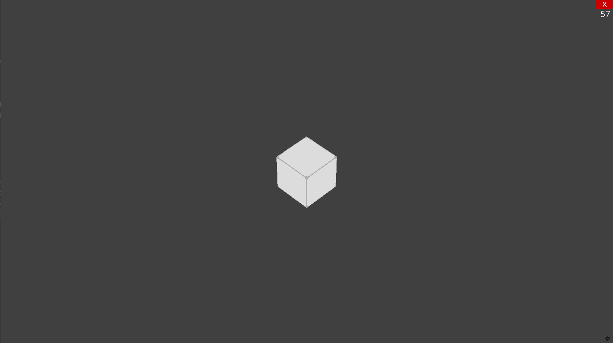

Get Your Claws into Game Development:
A Beginner's Guide to Ursina
what is Ursina?
Ursina is a game engine which utilizes Python to speed up game development. It utilizes panda3d to render both 2d and 3d games, and comes with a ton of features right out of the box!
Like What?
- Extendable Prefabs for common use cases such as First Person and 2d platformer Controllers
- A variety of prebuilt shaders and the ability to create your own custom shaders
- A MIT license so you'll never have to pay royalties to Ursina, and can modify it to fix bugs or add features
- A cute bear mascot! Plus all the cool things you can do with Python!
- Freedom from static typing!!!
Getting started is super easy!
Just run this command (and have Python 3 installed)
pip3 install ursina
From there you can create a main.py file! I would suggest putting it in a directory, but that is up to you.
from ursina import *
app = Ursina()
app.run()
Now you can run `python main.py` to test the game!
What do you see?
Not much here to look at, just a grey screen
from ursina import *
app = Ursina()
cube = Entity(model="cube", texture="white_cube", rotation=(45, 0, 45))
camera = EditorCamera()
app.run()
Now you can run `python main.py` or hit the f5 key to refresh the game!
Now we are getting somewhere!
We can use the mouse to look around at our cube!
This highlights one of the core concepts of Ursina
In Ursina there is no GUI editor, all the building of scenes and placement of objects happens in code!
While this may seem odd to those coming from Unity or Godot, it allows you tou store your scenes with little to no memory overhead